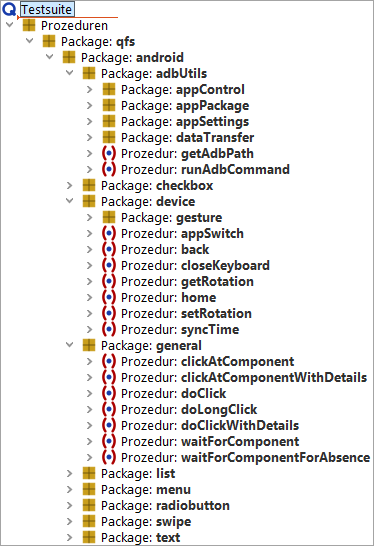

| Version 6.0.3 |
Es gibt eine ganze Reihe an verfügbaren Hilfsprozeduren für Android in der Standardbibliothek. Sie befinden sich in dem entsprechend benannten Package "android".
Einige sind analog zu den anderen GUI Technologien, es gibt aber einige sehr spezifische für mobiles Testen, z.B. um Wischaktionen oder Gesten durchzuführen, zum Blättern auf dem Bildschirm und um bestimmte Einstellungen für Komponenten vorzunehmen.
|
|  | ||
|
| Abbildung 15.21: Android Hilfsprozeduren | ||
| Letzte Änderung: 6.9.2022 Copyright © 1999-2022 Quality First Software GmbH |